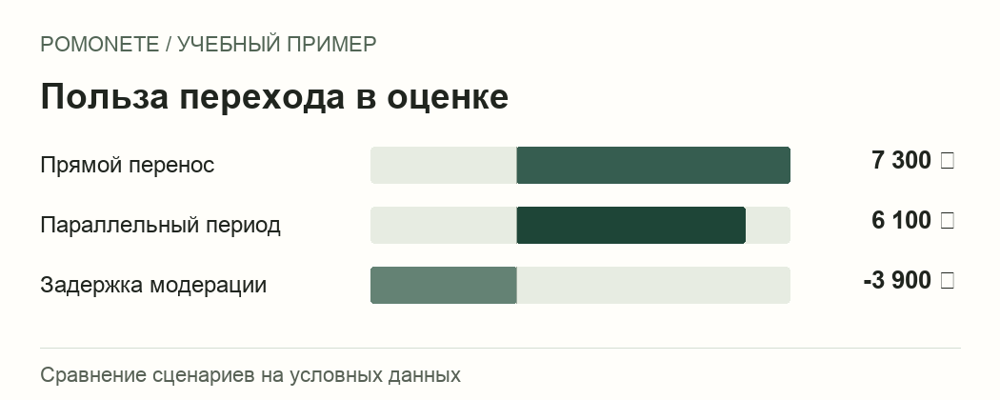

Новый артикул для прежнего товара. Как оценить переход на Яндекс Маркете
Какие расходы и потери объёма проверить, когда селлер планирует перевод ассортимента на другой SKU.
В магазине тренажёрных ремней меняется схема кодов. Селлер Яндекс Маркета хочет заранее узнать, сколько будет стоить период пересборки отчётности и наличия. Любые изменения идентификаторов надо выполнять по правилам площадки и с сохранением связи истории в собственном учёте.
Как оценить работу перехода
Запишите, какие идентификаторы можно сохранить и какие требуется связать в справочнике. Проверьте существующие партии, документы и прогноз объёма. Если новый код нужен для фактически другого товара, вынесите его в отдельную группу. В смете оставьте работу с остатками и время редактора.
Чтобы пересобрать расчёт «Польза перехода в оценке» для своего магазина, перенесите в него исходные числа. В формуле A обозначает «ожидаемая экономия, ₽», B обозначает «потерянный вклад на переходе, ₽», C обозначает «разовые работы, ₽». Две вычитаемые суммы хранят отдельно, чтобы можно было проследить происхождение изменения и избежать двойного вычета. Запишите рядом период и охват каждого среза. Если для одной строки известна только оценка, оставьте пояснение непосредственно рядом с ней: по итоговой цифре источник уже не восстановить.
Польза перехода в оценке = A − B − C
| Условие | Ожидаемая экономия, ₽ | Потерянный вклад на переходе, ₽ | Разовые работы, ₽ | Польза перехода в оценке |
|---|---|---|---|---|
| Прямой перенос | 26 500 | 11 100 | 8 100 | 7 300 ₽ |
| Параллельный период | 26 500 | 7 200 | 13 200 | 6 100 ₽ |
| Задержка модерации | 26 500 | 19 500 | 10 900 | -3 900 ₽ |

В сценарии «Прямой перенос» в формулу подставляем ожидаемая экономия, ₽ = 26 500, потерянный вклад на переходе, ₽ = 11 100, разовые работы, ₽ = 8 100. Получается 7 300 ₽. Переход планируют сразу после завершения партии и проверяют связку в собственном учёте.
В сценарии «Параллельный период» в формулу подставляем ожидаемая экономия, ₽ = 26 500, потерянный вклад на переходе, ₽ = 7 200, разовые работы, ₽ = 13 200. Получается 6 100 ₽. Покупатель ещё видит существующее предложение, однако дольше ведётся двойной контроль остатков.
В сценарии «Задержка модерации» в формулу подставляем ожидаемая экономия, ₽ = 26 500, потерянный вклад на переходе, ₽ = 19 500, разовые работы, ₽ = 10 900. Получается -3 900 ₽. Отдельно посчитана неделя с возможной задержкой публикации корректных полей.
Если «Прямой перенос» взять за исходную точку, «Параллельный период» меняет показатель «польза перехода в оценке» на -1 200 ₽, а «Задержка модерации» на -11 200 ₽. Между двумя последними строками разница составляет -10 000 ₽ при вычитании второй из третьей. Смотрите, какой именно вход изменился между строками. Если менялись объём и условия одновременно, итог сравнения относится ко всему сочетанию.
От меньшего результата до большего в таблице 11 200 ₽. При переходе из «Параллельный период» со значением 6 100 ₽ в «Задержка модерации» со значением -3 900 ₽ условия заданы явно. Этот интервал описывает три построенных случая, а для вероятности исходов нужна история. В рабочей записке полезно назвать минимальное значение, при котором сохранится ваше решение. Если такой порог попадает внутрь интервала, подтвердите спорный параметр до того, как менять процесс.
Почему нельзя сложить старую и новую историю вслепую
При одновременном существовании предложений отдельные заказы могут появиться только в одном. Сохраните дату переключения и причину. Для анализа повторных продаж отметьте связь физических товаров, а для корректности отчёта оставьте исходные идентификаторы каждого события.
Для исходной выборки пригодится такой набор материалов: экономика заказов и собственная закупочная ведомость. Зафиксируйте строки и границы периода, по которым собирался показатель «польза перехода в оценке». Копию выгрузки держите рядом с рабочим расчётом. По ней коллега сможет проверить, что строку отнесли к нужному сценарию, а единица измерения сохранилась при переносе.
Выгрузка маркетплейса даёт начисления по операциям. Собственную стоимость закупки, труд и расходники подставляют из учёта магазина с датой действия. Для решения по ассортименту разделите повторяющиеся переменные расходы, затраты на запуск и текущие фиксированные расходы команды. После изменения предложения обновляются и продажи соседних изделий. Счёт по одному товару имеет смысл дополнить итогом той группы, между вариантами которой может переключиться покупатель.
Что сильнее всего меняет результат
Здесь проверим устойчивость числа 6 100 ₽, полученного для «Параллельный период». Настраиваемые входы: «ожидаемая экономия, ₽», «потерянный вклад на переходе, ₽», «разовые работы, ₽». Меняем по одному параметру с шагом около 10% от его значения. Для небольших исходных чисел разница округляется до доступной целой единицы. Сдвиги ниже относятся к исходному сценарию, поэтому читатель может сопоставить их в одних единицах.
- «Ожидаемая экономия, ₽» меняется с 26 500 на 29 150. При прежних остальных входах получается 8 750 ₽, сдвиг составляет 2 650 ₽.
- «Потерянный вклад на переходе, ₽» меняется с 7 200 на 7 920. При прежних остальных входах получается 5 380 ₽, сдвиг составляет -720 ₽.
- «Разовые работы, ₽» меняется с 13 200 на 14 520. При прежних остальных входах получается 4 780 ₽, сдвиг составляет -1 320 ₽.
Наибольшее отклонение в примере связано с параметром «ожидаемая экономия, ₽» и составляет 2 650 ₽. Сохраните в расчёте, почему выбран именно этот сдвиг. После следующей выгрузки вместо учебных шагов попробуйте подставить разницу между наблюдавшимися периодами. Так проверите, насколько устойчива цифра при фактических колебаниях вашего магазина.
Дополнительный сценарий связан с незавершёнными возвратами. Заказы по старому коду приходят после смены на витрине. Правило переноса должно оставить проводку на исходной строке и знать физический товар, который фактически вернулся.
Что проверять утром после перехода
На нескольких заказах проверьте галочку доступности, идентификатор предложения, корректную цену и старый остаток в собственном учёте. Сравните ожидание с объёмом завершённых покупок за достаточный период. После первой недели скорректируйте оценку временной нагрузки.
Поставьте рядом плановую и фактическую строки сделки с сохранённой себестоимостью. Проверку удобнее начинать с позиций, на которые приходится основной вклад, потом выделять случаи с нестандартной логистикой, возвратом или разовой скидкой. Если после смены состава продаж средняя величина улучшилась, восстановите исходные веса и оцените, сколько прироста действительно получилось на сопоставимых позициях.
Оставьте в рабочей таблице причину выбора. Когда селлеры Яндекс Маркета возвращаются к расчёту «польза перехода в оценке», им пригодятся полученное значение, ответственный и дата пересмотра. Если в решении использовался сценарий «Параллельный период», перенесите вместе с ним допущения. При обновлении источников сначала проверьте одну исходную строку и только потом пересчитывайте сводку.